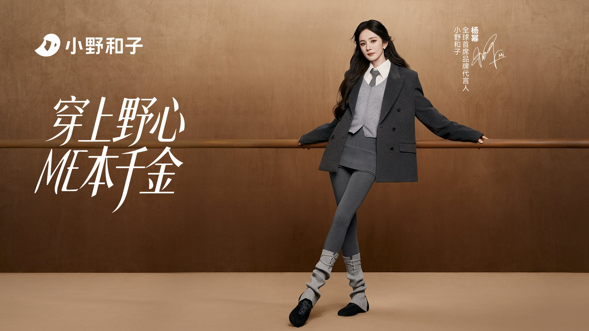
← Work — 11 / 15 · Marketing DesignYang Mi
Announcing Yang Mi as SheYeah’s Global Chief Brand Ambassador inside one week — one KV, an announcement-period asset system, and the e-commerce rules that carry the campaign from the city screen down to the product page. 一周之内完成杨幂出任小野和子全球首席品牌代言人的官宣：一张 KV、一整套官宣期物料，以及把 campaign 从城市大屏一路送到商品详情页的电商视觉规范。


Background
设计背景
SheYeah (小野和子) is a leading Chinese pantyhose brand that stepped into internationalisation in 2026. This second-phase ambassador announcement unveiled Yang Mi as Global Chief Brand Ambassador, carrying three missions at once: hold the domestic brand tone, satisfy both domestic and overseas aesthetics, and drive the fall/winter new-season campaign.
The real constraint was the calendar — one week for the shoot, the post-production and the KV sign-off, with the announcement-period content plan for every channel mapped out in parallel. As visual design lead I owned the KV key visual, the social media asset series and the e-commerce visual system specification, delivering a complete system inside that window.
小野和子（SheYeah）是国产连裤袜头部品牌，2026 年正式迈入国际化出海阶段。本阶段的「代言人二宣」官宣杨幂出任全球首席品牌代言人，同时承担三重使命：承接国内品牌调性、兼容国内外审美、驱动秋冬季上新传播。
真正的约束是时间：前期仅有一周完成拍摄、后期与 KV 定稿，同时要并行规划官宣期全渠道的内容节奏。我作为项目视觉设计负责人，负责官宣 KV 主视觉、社媒宣传物料与电商延展视觉系统规范，在极短周期内交付完整的视觉体系。
Approach
设计思路
Global Chief Brand Ambassador · SheYeah — the decisions that set the direction. 小野和子全球首席品牌代言人 —— 决定方向的几个选择。
-
01
Turn the headline into a symbol主标题抽象化：把文字变成符号
Anchored on the hero product — pantyhose — the campaign headline was abstracted from “text” into “symbol”, so the slogan itself becomes part of the brand’s identity instead of a line that has to be read.
围绕品牌主卖品（连裤袜）展开文字主标题的抽象化设计，把传播口号由「文字」转化为「符号」，让标题本身成为品牌识别的一部分。
-
02
One language of lines, one warm palette线条语言与统一棕色系
Soft, flowing lines echo the curves of the legs and the pantyhose, and a single warm-brown palette gives autumn/winter its texture — one visual language shared by the KV, the social assets and e-commerce.
以柔美、延展的线条呼应腿部线条与连裤袜的曲线；统一棕色系呈现秋冬氛围与内敛温柔的女性内核，让 KV、社媒与电商共用一套视觉语言。
-
03
Fine Song type, restrained femininity纤细宋体，克制而精致
The whole project runs on a fine Song typeface — light, refined, restrained — which pairs with the season’s content instead of competing with it.
全案采用纤细宋体，传递轻盈、精致、克制的女性化气质，与秋冬上新内容互为表里。
-
04
KV as the core, then systematise以 KV 为核心沉淀规范
With the KV as the visual core, rules were sedimented: three-column product layouts, a benefit hierarchy and the placement of international certifications (LYCRA®, OEKO-TEX®) — so every channel lands fast and lands aligned.
以 KV 为视觉核心沉淀规范：产品图三栏版式、卖点信息层级与国际认证标识（LYCRA®、OEKO-TEX®）排布规则，支撑官宣期多平台物料与电商详情、产品图的快速统一落地。
Outcome
成果展示
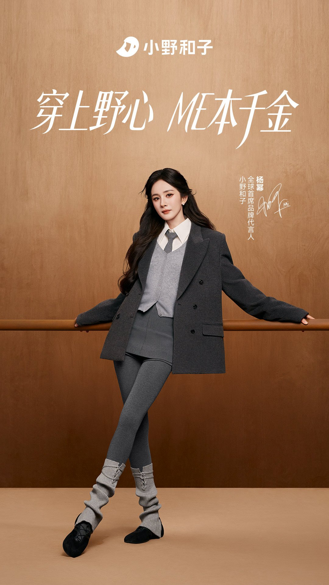
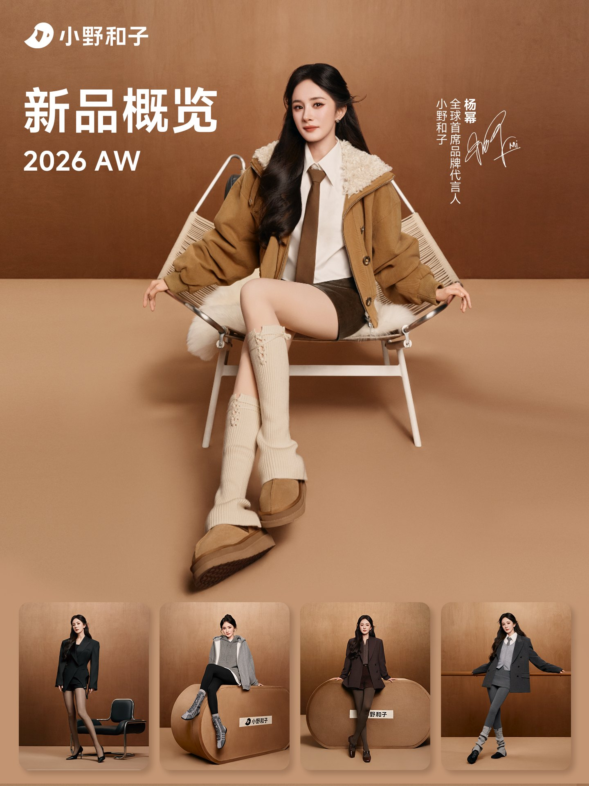
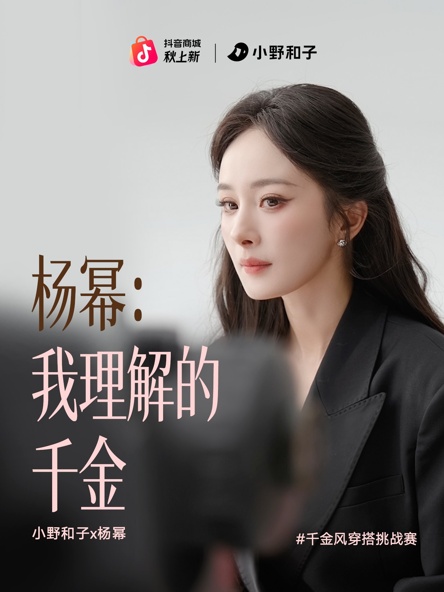
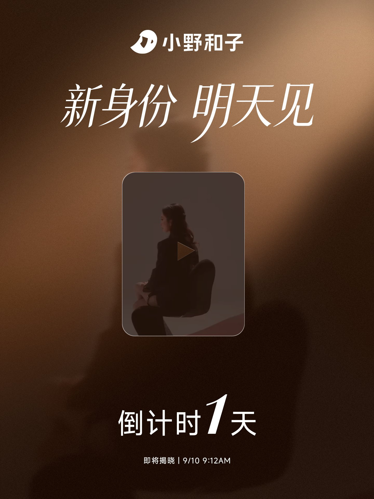
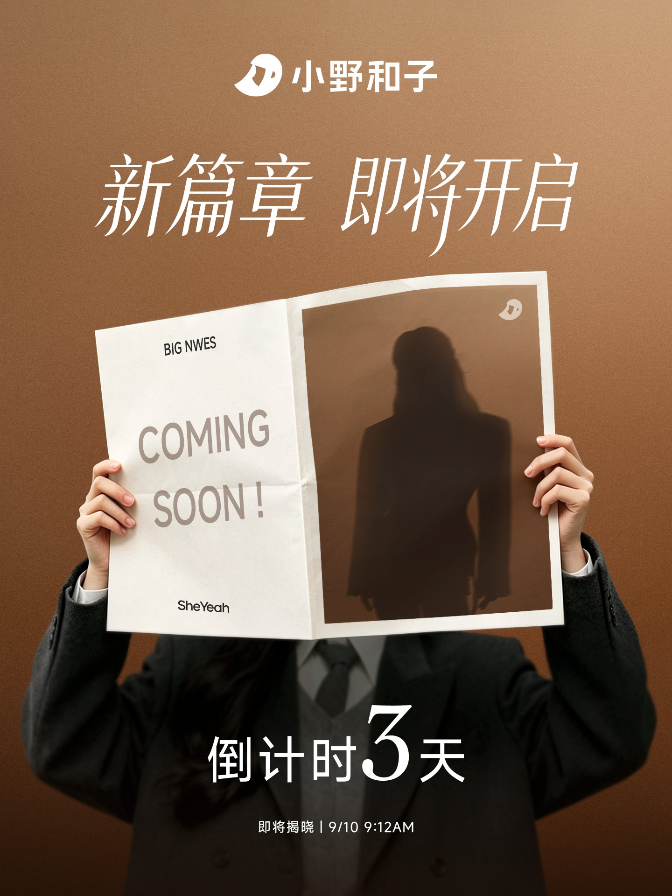
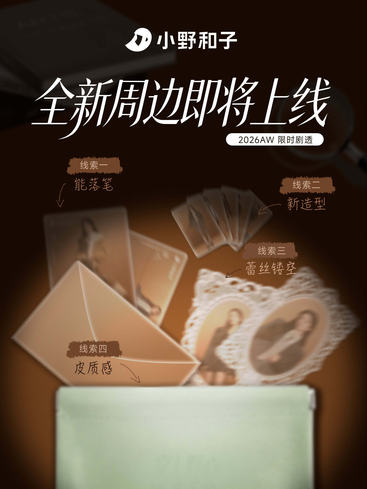
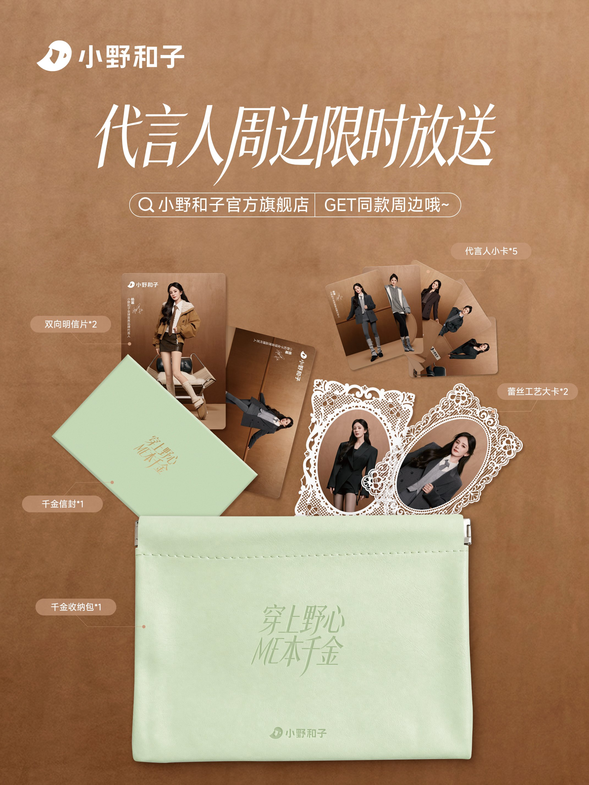
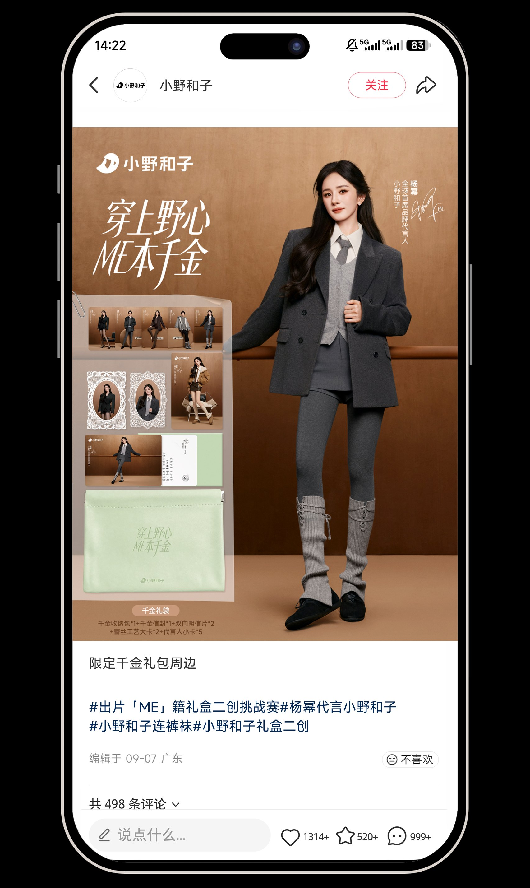
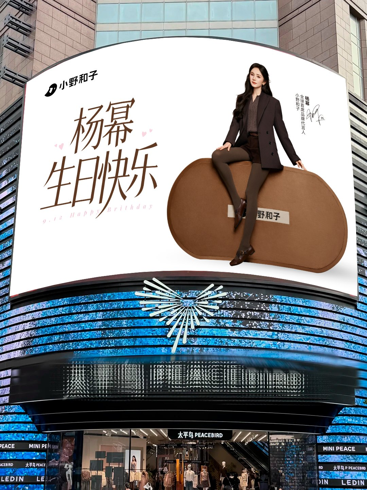
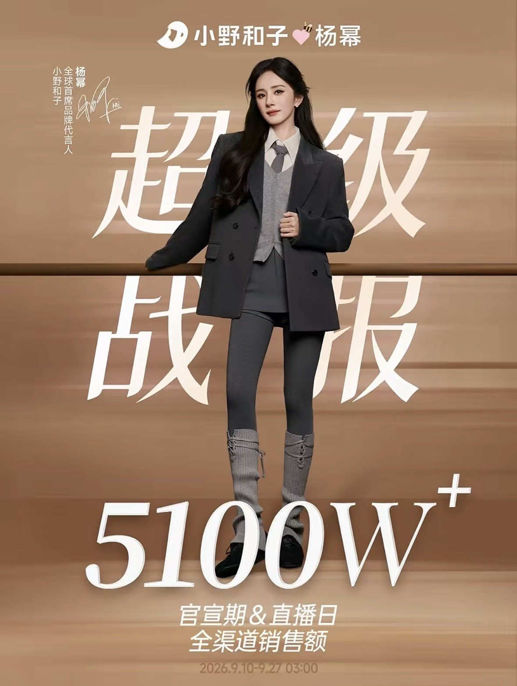
- Announcement period
- 10—27 Sep 2026 · ¥51M+ all-channel sales across launch and livestream days2026.9.10 — 9.27 · 官宣期与直播日全渠道销售额 5100W+
- Reach
- 270M+ total voice · 210M+ Douyin plays · 12.96M+ Xiaohongshu views · 40M+ Weibo reads with chart-topping hashtags全域声量 2.7 亿+ · 抖音播放 2.1 亿+ · 小红书 1296.3W+ · 微博阅读超 4000W 并霸榜
- Commerce
- No.1 on both Douyin underwear & hosiery livestream charts; 10M+ units sold cumulatively抖音旗舰带货榜内衣裤袜类目双榜 TOP1；店铺累计已售 1000W+ 单
- Livestream
- 3.08M+ cumulative views · 41.94M+ impressions · 110K+ live peak直播累计观看 308W+ · 曝光 4194W+ · 实时峰值 11W+
- Highlights
- City screens lit in Shanghai, Hangzhou, Beijing, Shenzhen, Guangzhou and Chengdu — plus “Next stop: Paris”上海、杭州、北京、深圳、广州、成都等城市点亮核心大屏，并预告「下一站巴黎」
- Purpose
- “In the Name of ME” × 贝有灵且美 — “Ceremony of Youth”, growth education for rural adolescent girls公益企划「以ME之名」联合贝有灵且美，发起乡村青春期女孩成长教育「豆蔻之礼」
Next project / 下一个作品
Li Jiaqi × Double 11